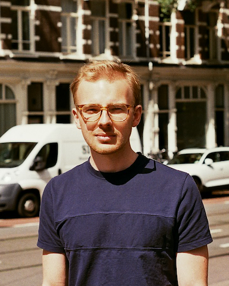

About me

My name is Gijs van Til, an Amsterdam-based LL.M. graduate in Information Law and Private Law, currently working as IT / Privacy Lawyer at Project Moore.
Publications
2023
Viergever, L. & Til, G. van (2023). NIS 2 en de AVG: Werk aan de winkel? Computerrecht 2023, afl. 4, pp. 290-300 (Link).
> 2022
Seeters, C.G.A.J. van & Til, G. van (2022). Disproportionele voorwaarden in overeenkomst. Noot bij uitspraak Rechtbank Noord‐Holland van 14 april 2022 - ECLI:NL:RBNHO:2022:3274 Tijdschrift Jurisprudentie Aanbestedingsrecht (JAAN) 2022, afl. 5, pp. 440-459 (Link).
> 2021
Til, G. van (2021). Boekbespreking: Privacy Is Hard and Seven Other Myths. Achieving Privacy through Careful Design. in: Privacy & Informatie 2021-6, pp. 283-284 (Link).
Til, G. van (2021). Gaia-X: Dé Europese cloud in wording? Tijdschrift voor Internetrecht 2021-5, pp. 176-189 (Link).
> 2020
Viergever, L, Koëter, J & Til, G. van (2020). Reactie op Internetconsultatie Verzamelwet gegevensbescherming. Wetsvoorstel 11059, Juli 2020 (Link).
> 2019
Poort, J. & Til, G. van (2019). The role of territorial licenses and public support schemes in financing European films. International Journal of Cultural Policy, DOI: 10.1080/10286632.2019.1690475 (Link).
Til, G. van (2019). Gezamenlijke verantwoordelijkheid voor de verwerking van persoonsgegevens door social plug-in op website - Noot bij arrest van 29 juli 2019 van het Europees Hof van Justitie inzake Fashion ID tegen Verbraucherzentrale NRW - ECLI:EU:C:2019:629 (Fashion ID) Tijdschrift voor Internetrecht 2019-5, pp. 187-191 (Link).
Irion, K. & Til, G. van (2019). Introduction. in M. Cappello (Ed.), The independence of media regulatory authorities in Europe, IRIS Special (pp. 3-6). Strasbourg, FR: European Audiovisual Observatory (Link).
Irion, K. & Til, G. van (2019). The evolution of independent regulatory authorities in the audiovisual media sector in European Union law. in M. Cappello (Ed.), The independence of media regulatory authorities in Europe, IRIS Special (pp. 19-25). Strasbourg, FR: European Audiovisual Observatory (Link).
Til, G. van (2019). The Netherlands. in M. Cappello (Ed.), The independence of media regulatory authorities in Europe, IRIS Special (pp. 83-90). Strasbourg, FR: European Audiovisual Observatory (Link).
Til, G. van (2019). Zelfregulering door online platforms: een waar wondermiddel tegen online desinformatie? Mediaforum 2019-1, pp. 2-13 (Link).
Poort, J., Hugenholtz, P.B., Lindhout, P. & Til, G. van (2019). The future of film financing in the Digital Single Market: The role of territoriality and new models of financing. Research for Committee on Culture and Education (CULT) - European Parliament, Policy Department for Structural and Cohesion Policies, Brussels (Link).
Til, G. van (2019). The Netherlands. in M.S. Spielkamp (Ed.), Automating Society – Taking Stock of Automated Decision-Making in the EU (pp. 93-102). Berlin, DE: AlgorithmWatch & Bertelsmann Stiftung (Link).
Several contributions to IRIS – Legal Observations of the European Audiovisual Observatory:
- Media authority to work more closely with Data protection authority. IRIS 2019-7(23), p. 19 (Link).
- Dutch broadcaster not liable for infringing former mayor’s right to private life. IRIS 2019-7(22), p. 18 (Link).
- Recording and sharing by a journalist of a confidential phone call with a council member was not unlawful. IRIS 2019-3(26), p. 22 (Link).
- Dutch government presents course of action against disinformation in the build-up to national and European elections. IRIS 2019-2(20), p. 17 (Link).
- Column about a Dutch well-known comedian judged unlawful because it was needlessly offensive. IRIS 2019-2(19), p. 16 (Link).
- Dutch State liable for statements made by former State Secretary about downloading from illegal sources. IRIS 2019-1(29), p. 24-25 (Link).
> 2018
Several contributions to IRIS – Legal Observations of the European Audiovisual Observatory:
- Special Rapporteur on the promotion and protection of human rights and fundamental freedoms while countering terrorism. Facebook’s ‘terrorism’ definition is too broad. IRIS 2018-9(5), p. 8 (Link).
- Twitter user and Dutch website liable for disseminating explicit content of well-known TV personality. IRIS 2018-8(35), p. 28 (Link).
Til, G. van (2018). Waar het wringt: Zoekmachines en hyperlinks als mededeling aan het publiek. AMI : Tijdschrift voor Auteurs-, Media- & Informatierecht, 42(3), pp. 103-109 (Link).